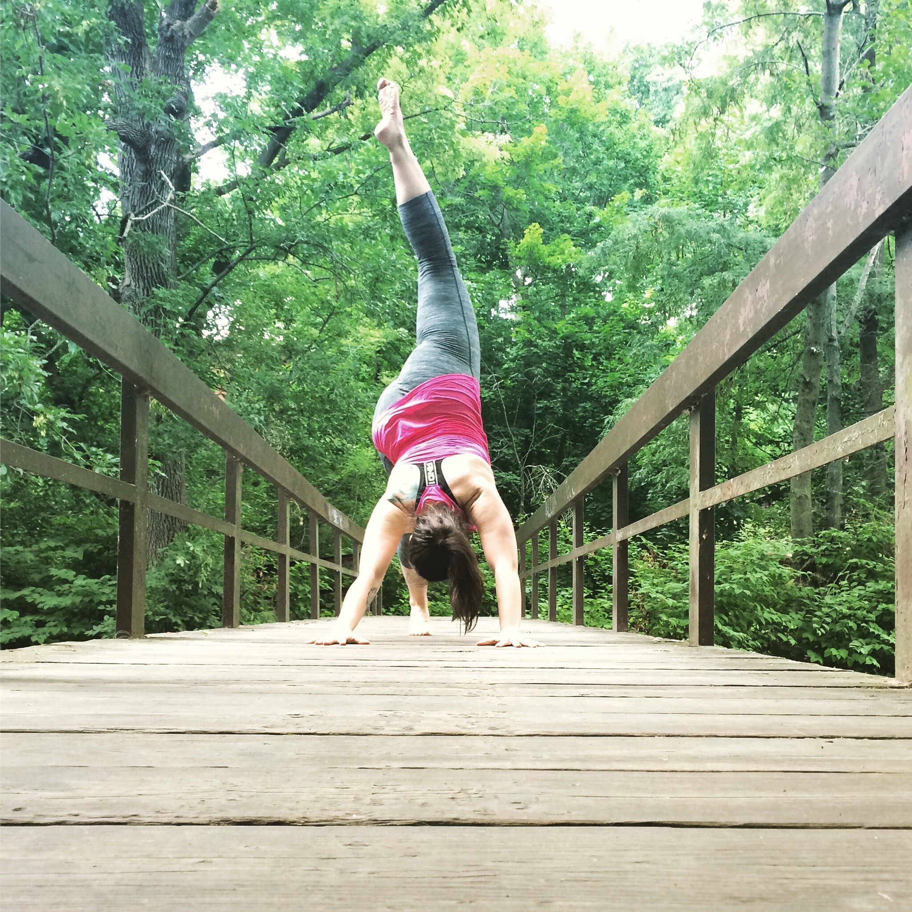
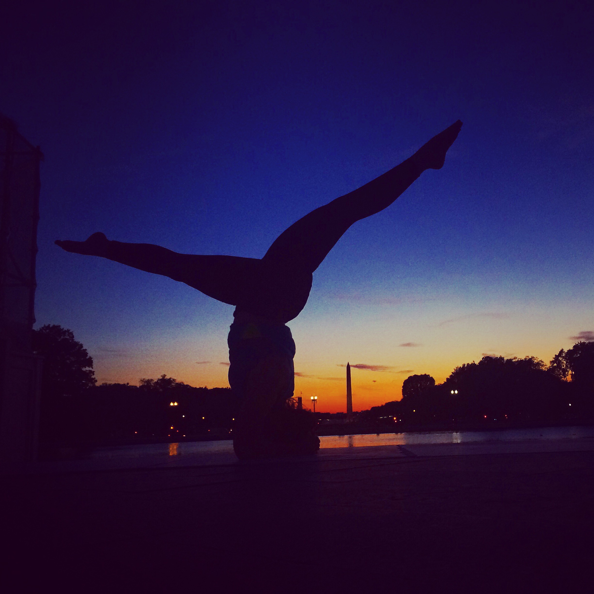
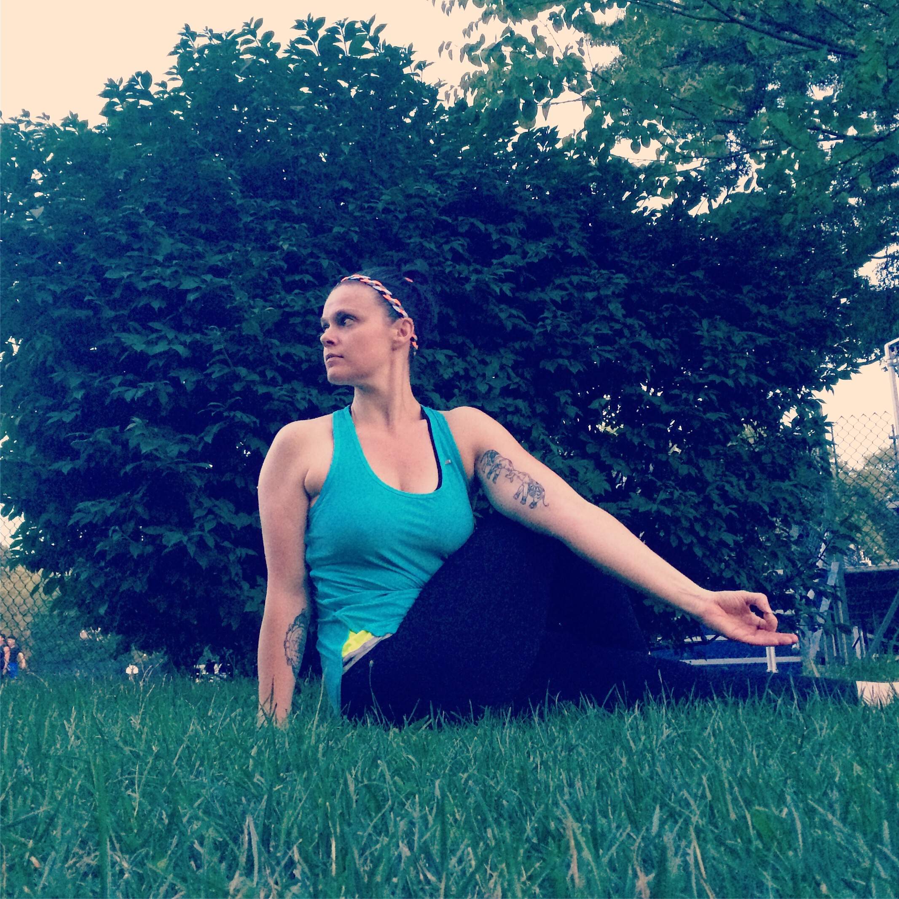
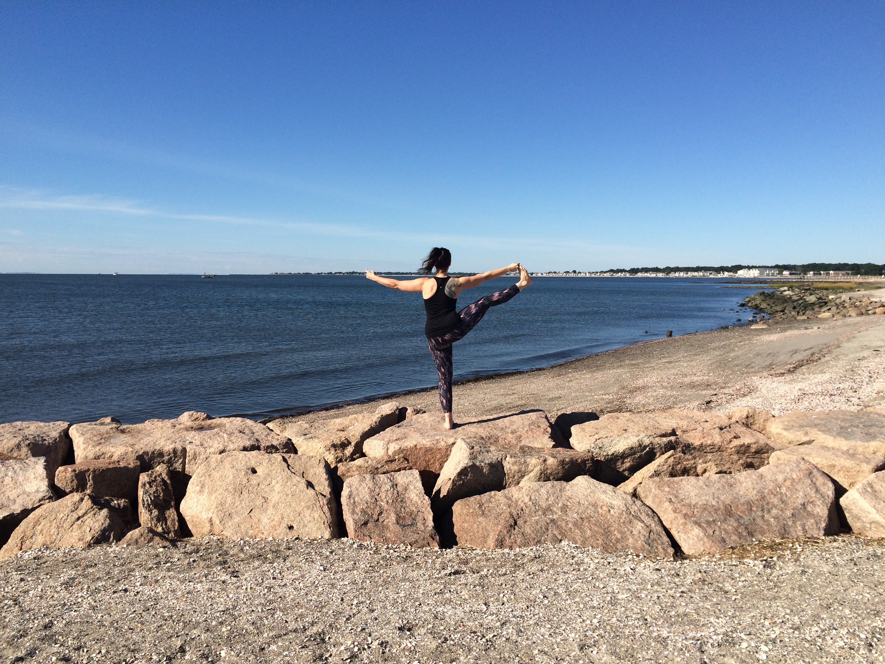
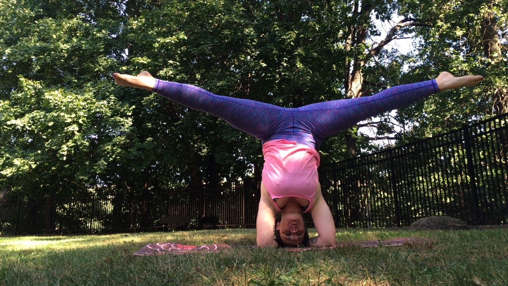
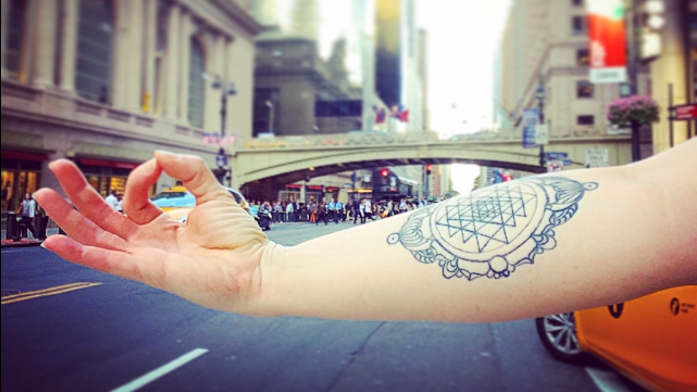
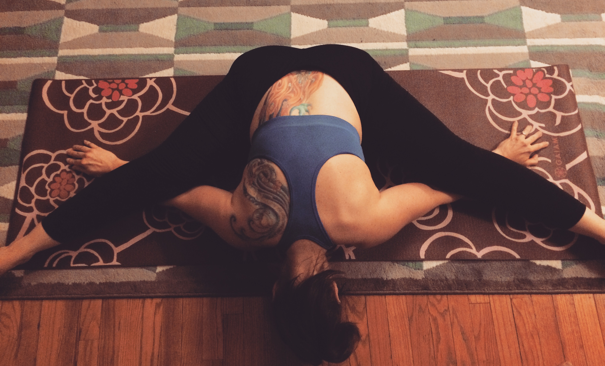
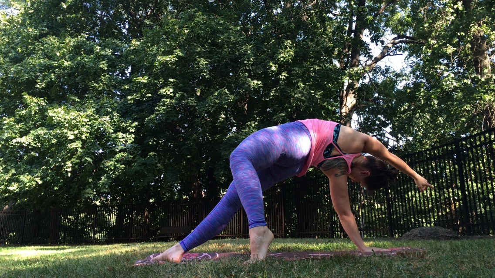
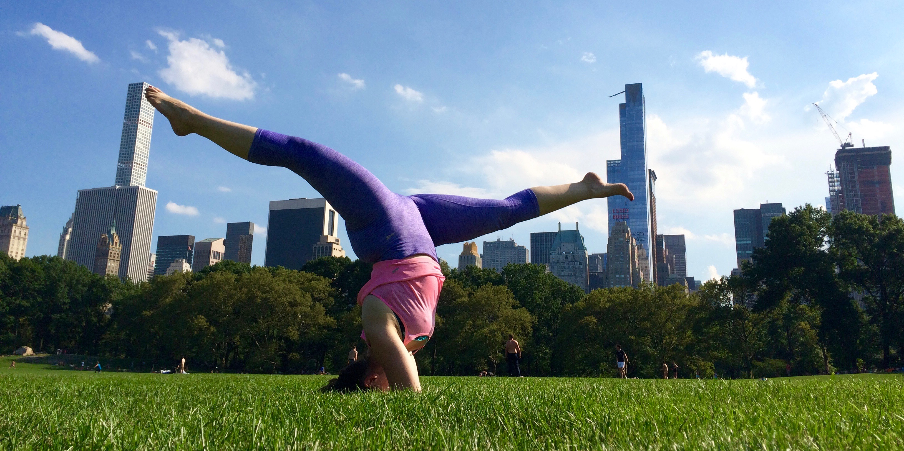

Welcome to the Yoga Blog of Julianna.
A space for me to share my thoughts and discoveries with you!
A space for me to share my thoughts and discoveries with you!



POSTS
-
Finding Balance
September 2, 2016
Some days I want to practice in the morning, then take class, then practice again at home. Some days I want to take four naps.... -
A Daily Dose of Motivation
September 1, 2016
So, as stated in an earlier post, I found inspiration in an experiment on joy.... -
Spiritual Wealth
August 31, 2016
From the moment I saw the Sri Yantra symbol, I knew I wanted it on my body, permanently.... -
Inspired By Joy
August 30, 2016
For those who are quite close to me it may seem rather spontaneous.... -
Laying the Foundation: Part 2
August 29, 2016
 For most of my young adult life, I lived in the future....
For most of my young adult life, I lived in the future.... -
Laying the Foundation: Part 1
August 28, 2016
I was never the kind of person that worked at something.... -
100 Day Journey of Yoga Teacher Training
August 27, 2016
I began practicing yoga almost fifteen years ago....